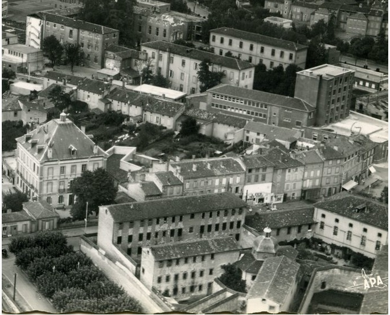
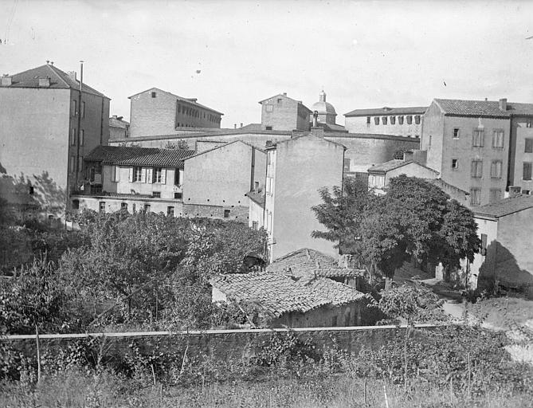
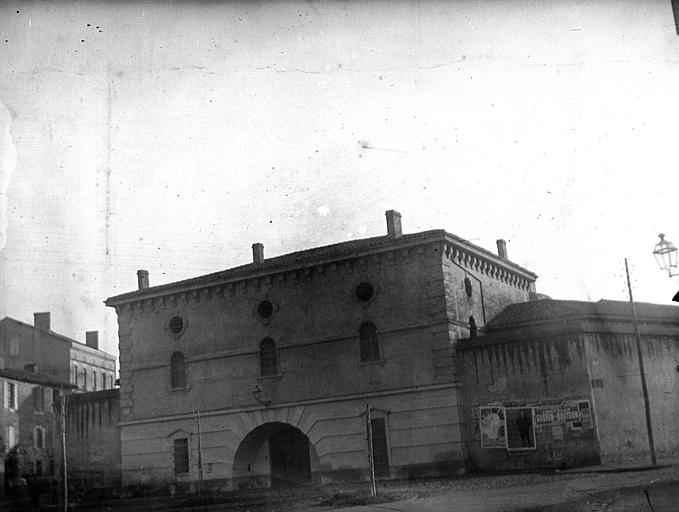
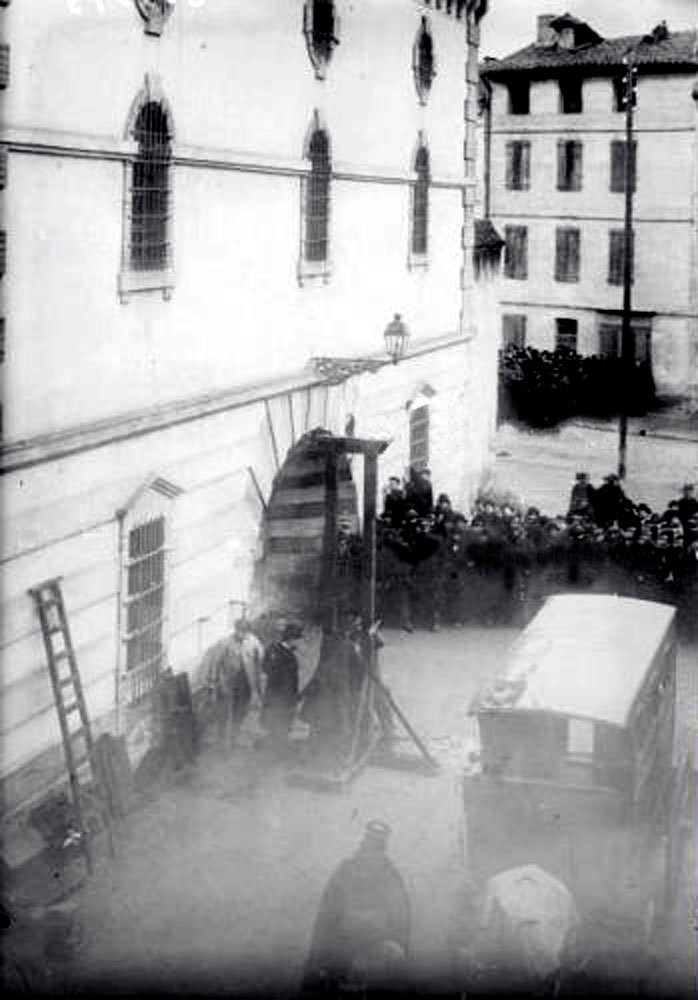
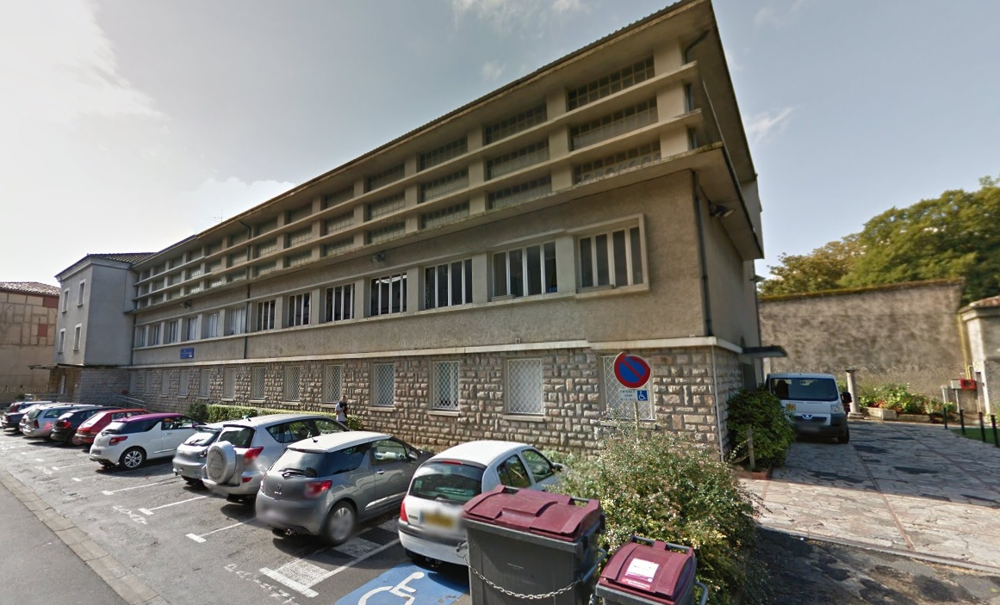
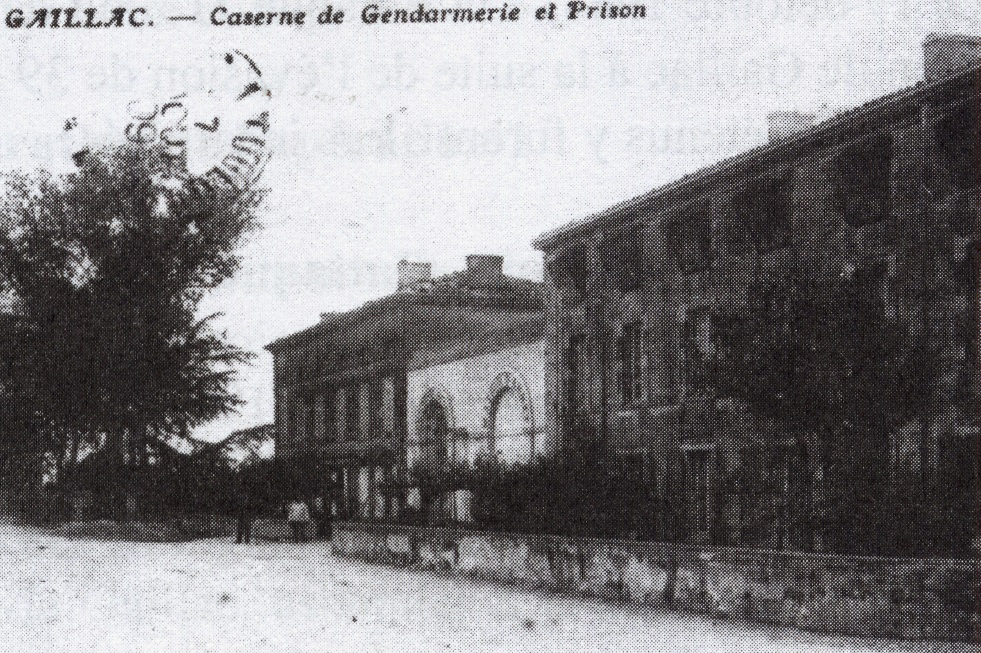
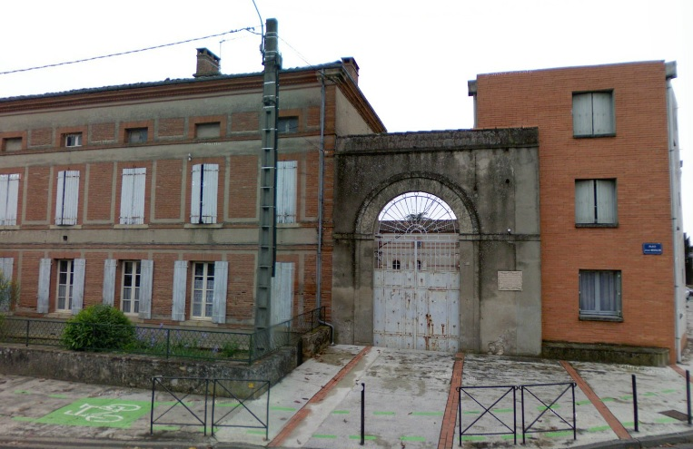
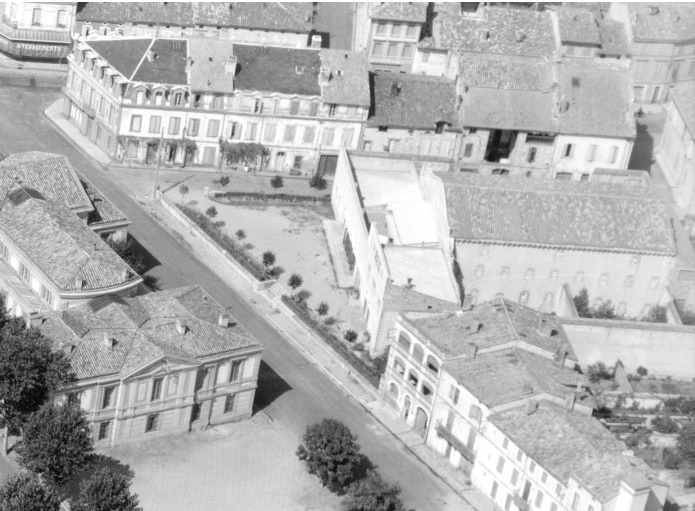

| Département | Images | Ville | Nom | Adresse | Période | Capacité | Histoire du lieu | Nombre d'exécutions |
| Tarn (81) |     |
Albi | Maison d'arrêt des Cordeliers | Place Lapérouse | 1831-1968 | 97 places, 11 surveillants (1962) | Sous la Révolution, la maison d'arrêt se trouve dans le chapitre de la cathédrale Sainte-Cécile. La proximité de la prison avec le lieu de culte posant problème, en 1820, on décide de construire une nouvelle maison d'arrêt, tâche confiée à l'architecte Mariès - qui avait, sous la Révolution, obtenu la sauvegarde de la cathédrale, promise à tomber sous les coups de masse. Construites en même temps que le Grand Séminaire et la nouvelle gendarmerie, sur la plaine de Saint-Salvi, à l'arrière du palais de justice, sur l'ancien couvent des frères mineurs construit en 1242 et rasé en 1791. Sur un terrain de forme triangulaire, la prison n'est achevée qu'en 1843, douze ans après avoir reçu ses premiers occupants ; cependant, dans la décennie suivante, on ajoute la chapelle, des infimeries et une salle d'isolement pour les détenus atteints de la gale. Environ 86 occupants. La maison d'arrêt étant jugée insalubre et peu commode de par sa présence en centre-ville, on prend la décision de construire une nouvelle maison d'arrêt en périphérie, plus petite - 57 places - mais neuve. L'ancienne prison est donc démolie fin 1969, à sa place se trouve désormais un parking, la place de l'Amitié entre les peuples, et le théâre "L'Athanor". | Trois exécutions en 1909 et 1941. |
| Tarn (81) | Albi | Maison d'arrêt | 4, rue André-Imbert | En service depuis 1968 | 57 places (2015) | Aucune exécution | ||
| Tarn (81) |  |
Castres | Maison d'arrêt | 39, rue Emile-Zola | 1812-1960 | Les geôles castraises ont souvent déménagé du XVIIe au XIXe siècle. Pendant la Révolution, c'est dans la maison commune - actuel hôtel de ville - qu'elles se situent. Sous le Premier Empire, on construit la nouvelle prison à côté du palais de justice, sur les fondations de l'ancien couvent des Trinitaires. Pouvant accueillir une cinquantaine de détenus, elle comporte à l'entrée le bâtiment administratif, puis dans le bâtiment principal, sur trois niveaux : au rez-de-chaussée, l'infirmerie, le cachot, le réfectoire commun et des cellules pour trois détenus environ. Aux étages, deux grands dortoirs. Le tout est entouré par trois cours de promenades, elles-mêmes cernées par un mur d'enceinte haut de 7 mètres. Devenue prison cellulaire en 1927 - cellules très exigues, moins de 4m² -, elle ferme ses portes en 1934, puis est réouverte sous Vichy, servant principalement à l'incarcération des résistants : le 22 septembre 1943, 36 détenus s'en évadent pour rejoindre le maquis. Devenue MJC, puis "Loisirs-Centre". | Aucune exécution | |
| Tarn (81) |   |
Gaillac | Maison d'arrêt | Place Jean Moulin | 1850-1926 | La maison d'arrêt de Gaillac se trouvait, à compter de 1828, dans l'hôtel particulier de la famille Pierre de Brens, racheté par le département trois ans auparavant. Cela ne dure que 22 ans, car les lieux n'étant pas adaptés à l'incarcération, on assiste à des évasions fréquentes qui incitent à construire des bâtiments pénitentiaires dignes de ce nom. Voisine de la brigade de gendarmerie - avec leurs portes jumelles - , la nouvelle prison de Gaillac subit, comme la majorité des petites prisons de sous-préfecture, une fermeture en 1926. Ouverte de nouveau durant la Seconde guerre mondiale, elle sert à l'incarcération de résistants. Le 12 août 1944, 44 détenus attendant leur déportation en Allemagne sont libérés par les maquisards, lors d'une opération silencieuse particulièrement réussie... C'est en chantant "La Marseillaise" que les prisonniers quittent les lieux et gagnent à leur tour le maquis. Démolie en 1968, l'endroit continue d'accueillir la caserne de gendarmerie agrandie jusqu'en 2013. Dernier vestige apparent, le mur d'enceinte surnommé "Le mur des lamentations". | Aucune exécution | |
| Tarn (81) |  |
Lavaur | Maison d'arrêt | Allée Férréol Mazas | 1845-1926 | Située à côté du palais de justice - lequel est devenu la mairie en 2012. Après sa désaffection, la prison accueille un cinéma, puis la discothèque "Le Mylord". | Aucune exécution |
{kind=link}
{kind=link}
{kind=link}
{kind=link}
{kind=link}
{kind=link}
{kind=link}
{kind=link}